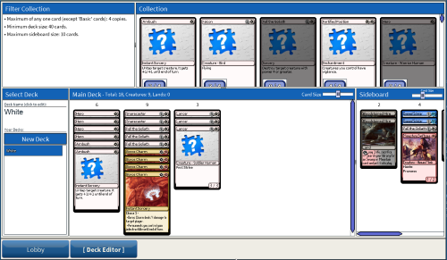
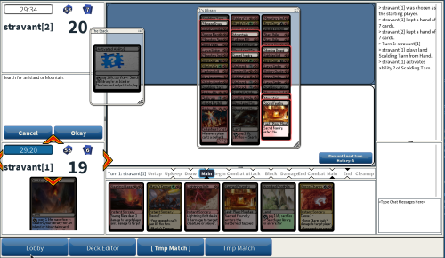
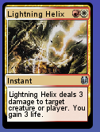
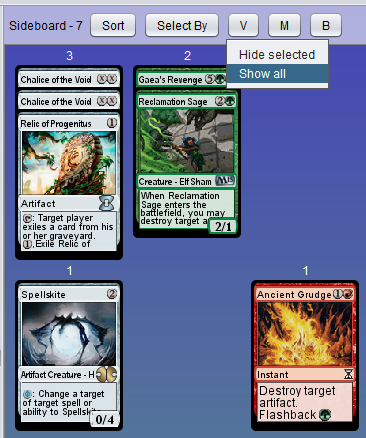
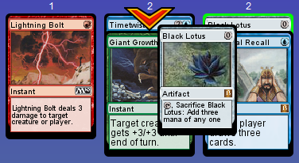

This page details some of the more interesting stuff I've done over the years and links related code / projects that you may find interesting.
The Carbon Accounting Group at Natural Resources Canada was publishing a paper on measuring the recovery of forest floors after disturbances. They wanted to create a companion app for the paper to more easily apply the techniques presented in the paper in the field, and I took on the job. The app needed to:
I completed the app in March 2017 and will update with a link to it and the paper once they are made available to the public.
COMTESA is a taxonomic classification program "COMputer Taxonomy and Ecology of Soil Animals" (accompanying paper) written using the Hypercard RAD platform for classic 1980's era Macintosh systems.
The original developers of COMTESA wanted to revive the software and make use of it again. Despite being a fairly old piece of software, it contains a lot of valuable information, including hundreds of hand drawn taxonomic diagrams. However Hypercard is a long dead software, and its associated file format is complex and poorly documented.
I was tasked with evaluating reviving the software in some way was possible, and doing a conversion to some more modern format if possible.
Roblox is a building, game creation, and social networking platform published by Roblox Corporation located in San Mateo, California. Building games on Roblox is what first got me into programming 8 years ago back when it was only a small startup.
Over the years I created quite a few influential games on the platform, and later on worked for Roblox. I did some contract work for them while I was still in high school, and then did two summer internships on site at their San Mateo office while in university. Though I don't do much on the platform at the moment, here are couple of interesting somewhat recent things that I have done:
In addition to my work on XMage, I have implemented a full clone of Magic the Gathering of my own on the Roblox platform.
It includes full rules enforcement, card rendering, deck editor, matchmaking, etc. It also has a robust client-server architecture which minimizes round trips to the server for that snappy feel, but still hides any private information so that even a compromised client would not be able to know information such as what cards the opponent has in their hand.
I never got around to adding trading and statistics for players or promoting it into a popular game on the platform, but it's basically a full engine and I may pick it up again at some point in the future.
Total project size is about 30,000 lines of Lua scripts, in addition to some Python tools that I used locally for sprite sheet packing and other tasks.
 I've published many popluar building plugins on the Roblox platform, the most popular one having more than 40,000 installs. The core tools provided by Roblox in their IDE work very well for common cases and support 3D-modeling in ways that are easily usable by non-skilled users, as is necessary given that the userbase of the program is mostly teenagers. For more advanced tasks, skilled users turn to plugins like the ones that I have made. Here are a couple of interesting ones:
XMage is an open source project dedicated to producing a platform where players can play the Magic the Gathering trading card game against an AI opponent or online against other people with full rules enforcement. See the project home page for a current distribution of the software, or view / download the source code on Github.
I have made quite a few contributions to the project and currently maintain the card rendering code. These are a couple of the larger contributions I've made:
For a long time XMage had simply used plain raster images to display cards, sourced from scans of the real paper versions of the cards. This was not ideal, as the most important information on the cards may not be very readable with just a scaled down image of a scan. Also, many cards in the game change other cards, and the static image scans will not reflect those changes even though the game engine is aware of them.
To improve the situation I developed a vector graphics based renderer to render the cards based on the characteristics that the game engine knew about them. It also dynamically increases the size of some parts of the card at small sizes. This provides clear readable text even when there are a lot of cards on the screen at once and each is quite small.
The deck editor is the part of XMage that allows you to choose which cards you want to play with, how many of them, what versions of them, etc. Historically it was a pain-point in the program because making a quality deck editor that is easy to use takes a lot of UI dirtywork that not many people want to do.
I created a full drag and drop based deck editor that allows you to box-select, ctrl/shift select, etc cards in the editor, and then drag / drop the selection in a dynamic grid of rows / columns. I also include show / hide functionality and many other extras.
 I have written some minification tools for the Lua scripting language. At the time I first wrote the original version of the tool there was no Lua minifier available, so I created one.
The current version of the tool has full semantic / scope awareness and tries to optimize its choice of which variables get minified to one character variable names in order to squeeze down the code size. It also does some tricks like restructuring assignment statements / where variables are declared in order to reduce necessary whitespace if those changes can provably be made without changing the program's meaning.
Roblox uses a proprietary compressed binary file format for its content. I wrote an efficient decoding library for that format in C, so that other programs can work with and export to Roblox place/model files.
I modeled the library off of similar libraries for block-based file formats like libpng, trying to avoid any unnecessary dynamic memory allocation.
I'm looking for work! If you have an opportunity in Edmonton Alberta and are interested please contact me. Resume and contact info are available on that contact page.
I'm currently working on creating a new better game view for XMage. The existing one had it's last significant changes over 5 years ago, and it could use a lot of improvement. Main goals:
{kind=link}
{kind=link}
{kind=link}
{kind=link}